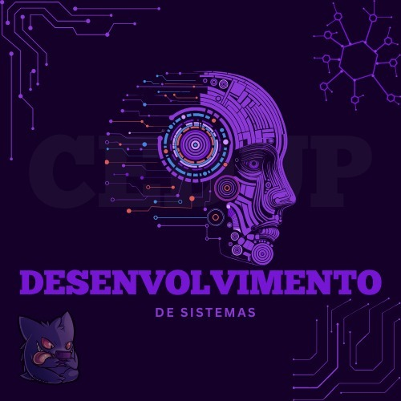

Curso Técnico de Desenvolvimento de Sistemas

Principas informações do curso:
O curso de Desenvolvimento de sistemas, tem a duração de 3 semestres (1 ano e meio) e tem como objetivo
ensinar a alunos do ensino médio sobre como programar e os principais aspectos sobre tecnologia e computação.
Esse curso é oferecido pelo governo federal, para que mais jovens tenham a oportunidade de realizá-lo, em vista
que além de ser gratuito, ele ainda oferece uma ajuda financeira para o aluno se locomover e se alimentar no
período das aulas. O aluno recebe esse auxilio conforme a sua presença no curso, sendo pago o valor de R$15,00
por dia.
REQUISITOS:
- Estar no primeiro ou no segundo ano do ensino médio.
- Frequentar o ensino regular.
- Ter uma conta bancária para que o dinheiro possa ser depositado.
Principais matérias:
- Iniciação a programação
- Modelagem de sistemas
- Desenvolvimento Web I e II
- Programação orientada a objetos
- Linguagem SQL
- Infraestrutura computacional
- Relações humanas
- Empreendedorismo, criatividade e inovação
- Inglês
Professores:
- Lucas (Desenvolvimento Web I e II, Programação orientada a objetos) ;
- Jorge (Modelagem de sistemas, Linguagem SQL);
- Rayane (Relações humanas);
- Andriely (Inglês);
- Luis (Iniciação a programação, Infraestrutura computacional);
- Rosely (Empreendedorismo, criatividade e inovação);
Clique aqui
para ver alguns códigos que os alunos desenvolveram.